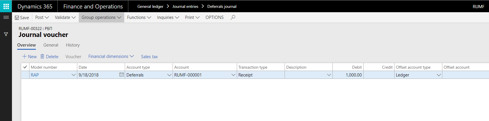

Receipt of deferrals
You use the Journal voucher page to create a receipt transaction for deferrals that were manually created. When you post the receipt transaction, the status of the deferrals is updated to In process.
Go to General ledger > Journal entries > Deferrals journal.
On the Action Pane, select New.
In the Name field, select a journal name.
On the Action Pane, select Lines to open the Journal voucher page.
On the Overview tab, select New to create a line.
In the Transaction date field, select the transaction date.
In the Transaction type field, select Receipt.
In the Deferral ID field, select the deferral to create a receipt transaction for.
In the Model number field, select the model number for the deferral.
Select OK. Voucher lines are created for the selected deferral on the Journal voucher page.
A transaction of the Receipt type is created for the deferral. This transaction has the specified receipt date.

On the Action Pane, select Validate > Validate and then Post > Post to validate and post the journal.
Go to General ledger > Deferrals > Deferrals to view the deferrals that are generated. To view the transaction details on the Deferrals transactions page, on the Action Pane, select Deferrals models, and then select Transactions.
Reverse a receipt transaction
You use the Reverse transaction page to reverse a receipt transaction that was manually created for deferrals. Receipt transactions that are generated by using the periodic task can be reversed. However, the other general ledger transactions that are created during the periodic task must be manually reversed in the general ledger journal.
Deferrals that are created after the fixed asset is disposed of are reversed when the fixed asset transaction is reversed.
- Go to General ledger > Deferrals > Deferrals.
- Select a deferral ID, and then, on the Action Pane, on the Deferrals tab, in the Books group, select Deferrals models to open the Deferrals models page.
- Select a deferrals model, and then, on the Action Pane, select Transactions to open the Deferrals transactions page.
- Select the receipt transaction to reverse, and then, on the Action Pane, select Reverse transaction to open the Reverse transaction dialog box.
- In the Date of storno field, select the reversal date. All transactions that are created on this date are reversed.
- Select the By all models check box to reverse transactions that are created by using the tax value model and the base value model.
- Select OK to reverse the transaction.